Predicting multiple conformations via sequence clustering and AlphaFold2
Abstract
AlphaFold2 (ref. 1) has revolutionized structural biology by accurately predicting single structures of proteins. However, a protein’s biological function often depends on multiple conformational substates2, and disease-causing point mutations often cause population changes within these substates3,4. We demonstrate that clustering a multiple-sequence alignment by sequence similarity enables AlphaFold2 to sample alternative states of known metamorphic proteins with high confidence. Using this method, named AF-Cluster, we investigated the evolutionary distribution of predicted structures for the metamorphic protein KaiB5 and found that predictions of both conformations were distributed in clusters across the KaiB family. We used nuclear magnetic resonance spectroscopy to confirm an AF-Cluster prediction: a cyanobacteria KaiB variant is stabilized in the opposite state compared with the more widely studied variant. To test AF-Cluster’s sensitivity to point mutations, we designed and experimentally verified a set of three mutations predicted to flip KaiB from Rhodobacter sphaeroides from the ground to the fold-switched state. Finally, screening for alternative states in protein families without known fold switching identified a putative alternative state for the oxidoreductase Mpt53 in Mycobacterium tuberculosis. Further development of such bioinformatic methods in tandem with experiments will probably have a considerable impact on predicting protein energy landscapes, essential for illuminating biological function.
Main
Understanding the mechanistic basis of any protein’s functions requires understanding the complete set of conformational substates that it can adopt2. For any protein-structure prediction method, the task of predicting ensembles can be considered in two parts: an ideal method would (1) generate conformations encompassing the complete landscape and (2) score these conformations in accordance with the underlying Boltzmann distribution. AlphaFold2 (AF2) achieved breakthrough performance in the CASP14 competition6 in part by advancing the state of the art for inferring patterns of interactions between related sequences in a multiple-sequence alignment (MSA), building on a long history of methods for inferring these patterns7–10, often called evolutionary couplings. The premise of methods to infer structure based on evolutionary couplings is that, because amino acids exist and evolve in the context of 3D structure, they are not free to evolve independently, but instead co-evolve in patterns reflective of the underlying structure. However, proteins must evolve in the context of the multiple conformational states that they adopt. The high accuracy of AF2 1 at single-structure prediction has garnered interest in its ability to predict multiple conformations of proteins, yet AF2 has been demonstrated to fail in predicting multiple structures of metamorphic proteins11, proteins with apo/holo conformational changes12 and other multi-state proteins13 using its default settings. Despite these demonstrations of shortcomings, it was shown that subsampling the input MSA enables AF2 to predict known conformational changes of transporters14.
Success of the MSA subsampling approach in a given system implies that when calculating evolutionary couplings with a complete MSA, evolutionary couplings for multiple states are already sufficiently present such that when introducing noise to obscure subsets of these contacts, there are still sufficiently complete sets of contacts corresponding to one or the other state. Indeed, methods for inferring evolutionary couplings have already demonstrated that contacts corresponding to multiple states can be observed at the level of entire MSAs for membrane proteins15, ligand-induced conformational changes16 and multimerization-induced conformational changes17. Methods proposed to deconvolve sets of states when previous knowledge about one or more states is known include ablating residues corresponding to contacts of a known dominant state18 and supplementing the original MSA with proteins that are known to occupy a rarer state19. However, there is a need for methods that deconvolve signal from multiple states if they are not already both present at the level of the entire MSA. For example, simply subdividing a MSA and making predictions for portions of the MSA has also been used to detect variations in evolutionary couplings within a protein family17,20.
We hypothesized that metamorphic proteins—proteins that occupy more than one distinct secondary structure as part of their biological function21—would be a useful set of model proteins to develop methods for predicting conformational ensembles, as they undergo particularly marked conformational changes. For example, although the metamorphic protein KaiB contains only 108 residues, it undergoes a conformational change that affects the secondary structure of around 40 residues in its C-terminal part, switching between a canonical thioredoxin-like structure and a unique alternative conformation5 (Fig. 1a,b). Fewer than ten metamorphic protein families have been thoroughly experimentally characterized21, spanning a diverse range of functions. Fold switching in proteins governs transcription regulation (RfaH in Escherichia coli22,23), circadian rhythms (KaiB in cyanobacteria5), enzymatic activity (the selecase metallopeptidase in Methanocaldococcus jannaschii24), cell signalling (the chemokine lymphotactin in humans25) and cell cycle checkpoints (MAD2 (encoded by MAD2L1) in humans26–28). A computational analysis of the Protein Data Bank (PDB) that identified changes in secondary structure between protein models sharing the same sequence suggested that between 0.5% and 4% of all proteins are fold switching29. The development of systematic methods to identify fold-switching proteins would aid in identifying fold-switching proteins, highlight new structures and interactions to target for therapeutics21, as well as illuminate broader principles of protein structure, function and evolutionary history that underlie known and unknown metamorphic proteins.
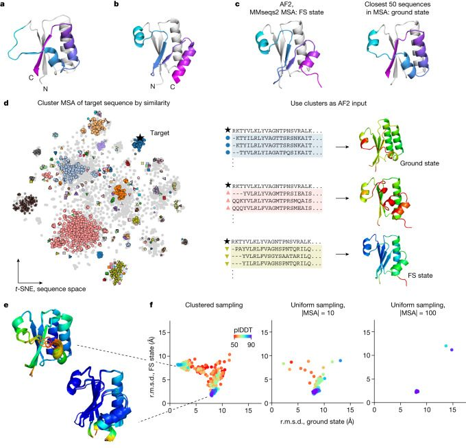
We hypothesized that, if we could deconvolve sets of evolutionary couplings without adding previous knowledge and input these sets separately into AF2, AF2 might be able to predict multiple conformations with high structural accuracy. We demonstrate that a simple MSA subsampling method—clustering sequences by sequence similarity—enables AF2 to predict both states of the metamorphic proteins KaiB, RfaH and MAD2. Importantly, we show that, using our method, AF-Cluster, both states are sampled and scored with high confidence by AF2’s learned predicted local distance difference test (plDDT) measure. We investigated the reason for AF-Cluster’s prediction of multiple states in the KaiB system: by making AF-Cluster predictions for KaiB variants from a curated phylogenetic tree, we found that KaiB variants predicted to fold to one or the other substate were distributed in clusters throughout the phylogenetic tree. We experimentally tested the AF-Cluster predictions on a KaiB variant in Thermosynechococcus elongatus vestitus that was predicted to favour the fold-switched (FS) state. Using nuclear magnetic resonance (NMR) spectroscopy, we could indeed verify our AF-Cluster prediction. To test the ability of our method to predict the effect of point mutations in switching a protein’s conformational equilibrium, we predicted and consequently validated a minimal set of point mutations that switch KaiB from R. sphaeroides between the ground and FS state.
Having evaluated our AF-Cluster method on known metamorphic proteins, we next hypothesized that this approach might be able to detect alternative conformations in protein families for which no alternative structures are known. We applied our method to an existing database of MSAs associated with crystal structures30. Here we describe one candidate from our screen with a novel predicted alternative fold, the secreted oxidoreductase Mpt53 from M. tuberculosis. Our results demonstrate that, in the oncoming age of AF2-enabled structural biology, related sequences for any given protein target might contain a signal for more than one biologically relevant structure, and that deep-learning methods can be used to detect and analyse these multiple conformational states.
AF-Cluster predicts both KaiB states
We started our investigation with a contradiction posed by predicting the structure of the metamorphic protein KaiB using AF2. KaiB is a circadian-rhythm protein found in cyanobacteria5,31 and proteobacteria32 that adopts two conformations with distinct secondary structures as part of its function: during the day, it primarily adopts the ground-state conformation, which has a secondary structure of βαββααβ that is not found elsewhere in the PDB (Fig. 1a; PDB: 2QKE). At night, it binds to KaiC in a FS conformation, which has a thioredoxin-like secondary structure (βαβαββα) (Fig. 1b; PDB: 5JYT). The thermodynamically favoured state for KaiB from T. elongatus (KaiBTE) is the ground state; the FS structure was first solved in a complex with KaiC33, and could be solved for the isolated KaiB only by introducing stabilizing mutations to this variant33. However, AF2 run using ColabFold34 predicts the thermodynamically unfavoured FS state for KaiBTE (Fig. 1c (left)).
We hypothesized that evolutionary couplings present within the MSA may be biasing the prediction to the FS state. Notably, predicting the 3D structure of KaiB using just the 50 MSA sequences that are closest by number of mutations (hereafter, edit distance) to KaiBTE resulted in a prediction of the ground state (Fig. 1c (right)); however, predicting the 3D structure of KaiBTE using the closest 100 sequences returned to predicting the FS state. Investigating this further revealed that the next 50 sequences themselves predicted the FS state in both AF2 and the unsupervised learning method MSA Transformer (Extended Data Fig. 1). We thought that the MSA might contain subsets of sequences that yield AF2 predictions for either the ground or FS state, and that subsets that predicted the FS state would overpower subsets predicting the ground state. We therefore clustered the MSA by edit distance using DBSCAN35, and ran AF2 predictions using these clusters as the input (Fig. 1d). We selected DBSCAN to perform clustering because we found that it offered an automated route to optimizing clustering a priori (Methods and Extended Data Fig. 2). Hereafter, we refer to this entire pipeline as AF-Cluster—generating a MSA with ColabFold, clustering MSA sequences with DBSCAN and running AF2 predictions for each cluster.
Notably, we found that the AF2 predictions from our MSA clusters comprised a distribution of structures, with the highest-scored regions of the distribution corresponding to the ground and FS state. Figure 1e shows the top five models within 3 Å of crystal structures for each state, ranked by plDDT. We compared this subsampling method to predictions from MSAs obtained by uniformly sampling over the MSA at various MSA sizes (Fig. 1f), analogously to methods used elsewhere to predict multiple states of transporters14. We found that, for uniformly subsampled MSAs of size 10, 1 out of 500 samples was within 3 Å of the ground state, with lower confidence than the MSA cluster samples (Extended Data Fig. 2e). Uniformly subsampled MSAs of size 100 did not sample the ground state at all.
We were interested in whether there were differing sets of contacts in our MSA clusters that other methods could also detect, and whether this could help us to understand how AF cluster detected two states. We used the same set of clusters to make predictions using the unsupervised deep learning model MSA Transformer36 and found that these clusters contained evolutionary couplings for both states, and the score based on contact maps correlated with the root mean squared deviation (r.m.s.d.) in AF2 (Methods and Extended Data Fig. 3). No randomly sampled MSAs were found to contain evolutionary couplings corresponding to the ground state.
Experimental test of KaiB predictions
To better understand the origin of these two different sets of evolutionary couplings, we wanted to rule out the possibility that non-KaiB proteins with similar folds to the FS state were contributing to the prediction. We created a phylogenetic tree for KaiB comprising 487 variants (Methods and Supplementary Dataset 1) and made structure predictions for all the variants. For each sequence, we used only the closest ten sequences by evolutionary distance as an input MSA to best detect local differences in structure predictions. We found that regions of high plDDT for both the ground and FS state were interspersed across the tree (Fig. 2a). We confirmed that, for variants in the tree that had been experimentally characterized, the prediction from AF-Cluster corresponded to the structure expected to be thermodynamically favoured (Fig. 2b). For example, variants from R. sphaeroides32, T. elongatus5 and Synechococcus elongatus31 all were predicted in the ground state, confirming their characterized circadian-rhythm function. By contrast, a KaiB variant from Legionella pneumophila that has previously been crystallized in the FS state37 was predicted with high confidence for the FS state.
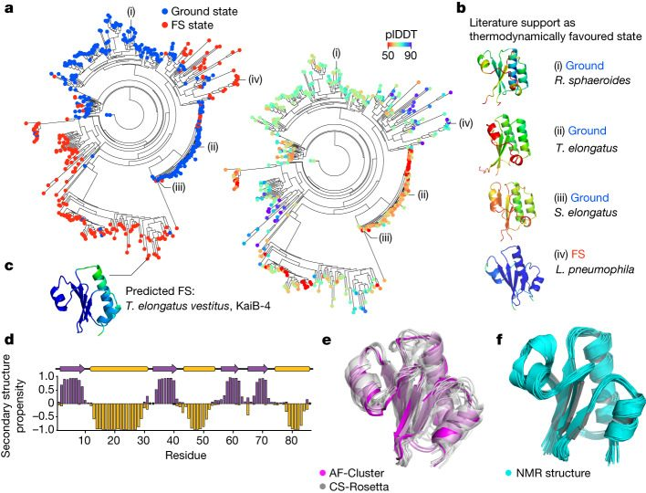
KaiB variants in cyanobacteria have been characterized as belonging to three groups as well as a fourth variant, previously described as elongated KaiB due to an N-terminal domain of unknown homology and function38. For clarity, we refer to the KaiB domain of this variant as KaiB-4. Notably, we noticed that KaiB-4 variants were evolutionarily close to the better-studied KaiB-1 variants involved in the circadian clock, yet the KaiB-4 variants were predicted by AF-Cluster to primarily occupy the FS state (Fig. 2c). To experimentally test this prediction, we characterized one such variant using NMR spectroscopy, from T. elongatus vestitus (hereafter, KaiBTV-4). KaiBTV-4 was found to be stably folded at 35 °C and, after backbone assignments, we found peak duplication for many peaks corresponding to a major stable and minor unfolded state (Extended Data Fig. 4). KaiBTV-4 was confirmed to be monomeric at NMR concentration as determined using size-exclusion chromatography coupled to multi-angle light scattering (SEC–MALS) (Extended Data Fig. 4). The secondary structure calculated from the major state chemical shifts indeed corresponded to the FS KaiB state (Fig. 2d). CS-Rosetta39 models calculated from the chemical shifts (Fig. 2e) are within 1.8 ± 0.3 Å r.m.s.d. to the FS state predicted by AF-cluster. We used 3D 1H-15N- and 3D 1H-13C-NOESY to determine the NMR structure, and confirmed that the NMR structure (Fig. 2f) also matches the AF-Cluster-predicted model with 1.89 ± 0.13 Å r.m.s.d. and an average pairwise r.m.s.d. of 0.7 Å over backbone atoms (Extended Data Table 1).
Mutations to flip the KaiB equilibrium
Beyond predicting the predominant state of naturally occurring proteins, we wanted to test the ability of AF-Cluster to predict effects of point mutations, a task that AF2 in its default settings has not achieved40. We hypothesized that, by comparing clusters that predict different states, we could identify a minimal set of mutations that would switch AF2’s prediction between states. We used KaiB from R. sphaeroides32 (hereafter KaiBRS) for this test, which we found using NMR switches between two monomeric states, to eliminate the complicating factor of mutations contributing to ground-state tetramerization in the previously studied KaiBTE 5. We observed that, as for KaiBTE, AF-Cluster predicts the ground and FS state for KaiBRS with high confidence. We calculated the difference in enrichment between sequence clusters predicting the ground and FS state (Fig. 3a), and noticed at several positions in the C-terminal part of the protein differentially enriched residues that differed substantially in their charge and hydrophobicity. For example, clusters predicting the FS state were enriched for arginine at position 68, whereas clusters predicting the ground state at position 68 were enriched for leucine, a switch between a charged and a hydrophobic residue. We hypothesized that a subset of these mutations might be sufficient for determining whether AF2 predicts the ground or FS state. We folded all combinations of the eight most-enriched residues in AF2 with no MSA to test whether any combination caused a high-confidence fold switch (Methods and Extended Data Fig. 5). Indeed, we found that three mutations—I68R, V83D and N84R—were sufficient to switch a prediction of KaiBRS from the ground state to a prediction of the FS state (Fig. 3b). We introduced these mutations into KaiBRS and characterized this triple mutant (KaiBRS-3m) using NMR (Fig. 3c). It was again confirmed to be monomeric at NMR concentrations using SEC–MALS (Extended Data Fig. 3). The 1H-15N heteronuclear single quantum coherence (HSQC) spectra in both the wild-type (WT) and KaiBRS-3m indicate the presence of major and minor state peaks, with the populations appearing to be flipped (Fig. 3d). Notably, the secondary chemical shifts from backbone resonance assignment of the major peaks confirmed that the incorporation of these mutations indeed switch KaiBRS from the ground to the FS state (Fig. 3e). Comparison of the average peak intensity ratios of the assignable minor (ground state) peaks to those of the major state (FS) peaks show that the mutant occupies the FS state with a population of 86% (versus 11% in the WT), and the ground state with a population of 14% (versus 89% in the WT) (Fig. 3f). Overall, NMR confirmed our prediction that a triple mutation switches KaiBRS to the FS state.
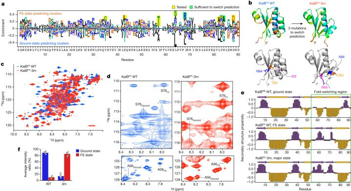
Testing AF-Cluster on other proteins
We next tested AF-Cluster on five additional experimentally verified fold-switching proteins: the E. coli transcription and translation factor RfaH, the human cell cycle checkpoint MAD2, the selecase metallopeptidase enzyme from M. jannaschii, the human cytokine lymphotactin and the human chloride channel CLIC1. In RfaH, the C-terminal domain (CTD) interconverts between an α-helix bundle and a β-barrel through binding to functional partners23. In the autoinhibited state, the α-helix bundle of the CTD interacts with the N-terminal domain. In the active state, the CTD unbinds and forms a β-barrel22,23 (Fig. 4a). Predicting the structure of RfaH with the complete MSA from ColabFold returned a structure that largely matched the autoinhibited state (Extended Data Fig. 6a) apart from the first helical turn in the CTD being predicted as disordered. Note that the B-factors in the crystal structure for this region are the highest (Extended Data Fig. 6b). The active state was not predicted. By contrast, AF-Cluster predicted both the autoinhibited and the active state (Fig. 4b). Notably, the average plDDT for the top five models for each state (84.2 for the active state, 73.9 for the autoinhibited) was higher than the plDDT of the autoinhibited state by the complete MSA (plDDT of 68.6), suggesting that clustering resulted in deconvolving conflicting sets of couplings.
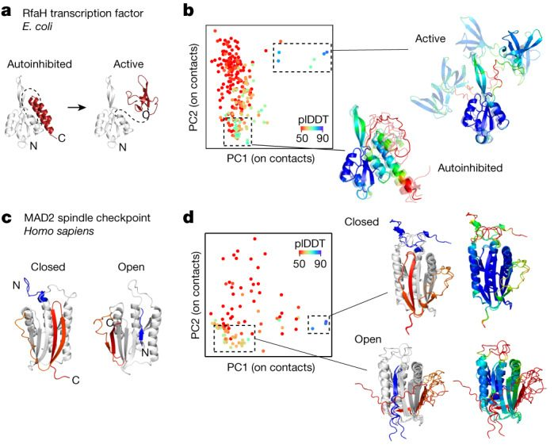
MAD2 has two topologically distinct monomeric structures that are in equilibrium under physiological conditions27. These are termed the open and closed states (often referred to as O-MAD2 and C-MAD2). The closed state binds to CDC20 as part of MAD2’s function as a cell cycle checkpoint26. In the closed state, the C-terminal β-hairpin rearrange into a new β-hairpin that binds to a completely different site, displacing the original N-terminal β-strand28 (Fig. 4c). We found that AF-Cluster again had the ability to predict models for both of MAD2’s conformational states (Fig. 4d).
RfaH and MAD2 both interconvert between two distinct monomeric forms. However, selecase, lymphotactin and CLIC1 interconvert between a monomeric and an oligomeric state (Extended Data Fig. 6c). AF-Cluster was unable to predict the oligomeric state for selecase, lymphotactin and CLIC1. The selecase protein is a metallopeptidase from M. jannaschii that was reported previously24. It reversibly interconverts between an active monomeric form and inactive dimers and tetramers. Lymphotactin is a human cytokine that adopts a cytokine-like fold but was found to adopt an all-β-sheet dimer as determined using NMR at a higher temperature and in the absence of salt25. CLIC1 is an ion channel with a redox-enabled conformational switch. In the reduced state, it adopts a monomeric state with a N-terminal βαβαβ fold. After being oxidized, it forms a dimer, and its N terminus adopts a ααα fold. This fold is stabilized by a disulfide bond between two of the α-helices within the monomer that forms after oxidation41. All of these proteins pose starting points for future improvements to AF-Cluster.
AF-Cluster predicts novel states
We next examined whether AF-Cluster could detect novel putative alternative states in protein families without known fold switching (Fig. 5a). As a starting point, we selected 628 proteins 48–150 amino acids in length from a database of MSAs associated with crystal structures30 (Methods). After clustering the MSAs using DBSCAN35, we generated AF2 predictions for ten randomly chosen clusters from each family and compared the plDDT to the r.m.s.d. from the reference structure. For most of the protein families screened, an increase in r.m.s.d. corresponded to a decrease in plDDT (Fig. 5b). As a control, AF-Cluster models of ubiquitin, a protein that is well characterized to have no alternative states, returns only models with high confidence and low r.m.s.d. to the crystal structure PDB 1UBQ. However, a handful of proteins in this preliminary screen returned models with a high r.m.s.d. and high plDDT, hinting to a predicted structure with high dissimilarity to the original structure as well as high confidence from AF2. For these proteins, we generated AF2 predictions for all generated clusters from the MSA.
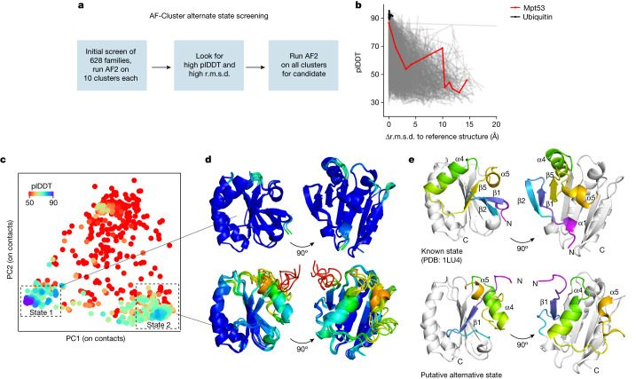
The results for one of these candidates, the oxidoreductase Mpt53 from M. tuberculosis, are described here. Mpt53 is an extracellular single-domain enzyme that is suggested to ensure correct folding of several cell-wall and extracellular protein substrates in M. tuberculosis by catalysing disulfide oxidation42. Figure 5c shows all of the AF-Cluster models for Mpt53, visualized by principal component analysis (PCA) on the set of closest heavy-atom contact distances. Two prominent states are observed that correspond to the largest-sized MSA clusters (Extended Data Fig. 7a), and both of which have plDDT values that are statistically significantly higher than the rest of the set (Extended Data Fig. 7b). One state corresponds to the known thioredoxin-like conformation of Mpt53 42, whereas the other state corresponds to a conformation with a different secondary structure layout (Fig. 5d,e). In the second state, strand β1 replaces β5 within the β-sheet. The α-helix α4 is displaced to the opposite side of the β-sheet, and α5 is rotated. Mpt53 is a member of a superfamily of enzymes with diverse functions that all share the same thioredoxin fold with a conserved CxxC active site that can form a disulfide bond. Models for the alternative state demonstrate a very similar active site orientation at residues Cys36–Cys39 (Extended Data Fig. 7c). We were interested in whether we could find structures in the PDB that matched this alternative state. We screened for homologous 3D structures for both 1LU4 and the alternative state in the PDB using DALI43 (Methods and Extended Data Fig. 7d–f). The closest structure that we found (PDB: 3EMX) adopted a similar secondary structure to the Mpt53 alternative structure. This structure is of an unspecified thioredoxin from the archaea Aeropyrum pernix with no associated publication.
We were interested in whether any structure homologues to the known Mpt53 state also predicted alternative conformations. We used AF-Cluster to test ten proteins with the lowest alignment-weighted r.m.s.d. from DALI to the original state (Methods). Notably, six out of the ten sampled an analogous alternative fold with varying amounts of sampling (Extended Data Fig. 8). The closest-ranked homologues for both the known and alternative state are dispersed across a calculated phylogenetic tree of all the DALI hits (Extended Data Fig. 9).
Discussion
AF2 has revolutionized prediction of single structures44, but devising methods to predict structures of multiple conformational states would substantially advance our understanding of protein function at the atomic resolution. We demonstrate that simply clustering input sequences from MSAs of metamorphic proteins enables AF2 to sample multiple biologically relevant conformations with high confidence.
Using the metamorphic protein KaiB as a model system, we sought to understand why clustering resulted in multiple states predicted. We found that pockets of KaiB variants in a phylogenetic tree were predicted to be stabilized for one or the other state. This is consistent with findings for the fold-switching proteins RfaH45 and lymphotactin46, as well as non-fold-switching proteins such as the Cro repressor family47. However, the myriad roles of KaiB in bacteria have yet to be fully understood: some bacteria contain up to four copies of KaiB, only one of which has been extensively studied38. One KaiB variant in L. pneumophila, which was crystallized in the FS state, was found to not be involved in circadian rhythms but was instead implicated in stress responses37. We identified a KaiB variant in T. elongatus vestitus that is phylogenetically close to the known fold-switching KaiB for which the ground state is thermodynamically favoured, yet was predicted and experimentally corroborated to be stabilized in the FS state. Notably, predicting this variant in single-sequence mode in AF2 incorrectly predicts the ground state (Supplementary Discussion), further underscoring the utility of isolating local evolutionary couplings by clustering sequences. Our findings raise biological questions to identify the biological role of this KaiB copy in cyanobacteria in the future.
However, considering that an ideal sampler would sample and score models in accordance with an underlying Boltzmann distribution, the AF-Cluster method has several limitations. First, the pLDDT metric itself cannot be used as a measure of free energy. This was immediately evident in our investigation of KaiB, for which, in our models generated using AF-Cluster, the thermodynamically disfavoured FS state still had a higher pLDDT than the ground state (Extended Data Fig. 2e). Furthermore, increasing evidence indicates that low pLDDT is correlated with regions with high local disorder as measured by backbone order parameters48. Second, the number of models returned for each state from AF-Cluster will reflect the abundance of constructs reflecting different states across the protein family, which cannot be interpreted as that state’s Boltzmann weight. We tested other methods for introducing noise in AF2 using KaiBRS with no MSA as a test—sampling across the five models, incorporating dropout and using random seeds—and found that none of these cause AF2 to predict any models of the FS state (Supplementary Discussion).
Disease-causing point mutations are often due to population changes of protein substates3,4 and there is therefore great interest for methods to predict the effects of point mutations on structural ensembles and free energy. We found that the information provided by our AF-Cluster method was sufficiently predictive to inform the design of three point mutations that could switch the equilibrium of KaiBRS from the ground to FS state. This work also establishes the KaiBRS variant as a facile system for testing multistate design and thermodynamic prediction methods.
Although our design of KaiB was performed using AF-Cluster with no MSA, we were interested in whether AF-Cluster’s sensitivity to the effects of point mutations could be generalized to other systems in which single point mutations have been demonstrated to completely switch folds. We tested 12 sets of point mutations in the GA/GB protein system. Starting from two naturally occurring 56-amino-acid domains from the multidomain protein G, in which GA adopts a 3-α-helix and GB a 4b+a fold, variants had been engineered to switch between both folds49–51 (Extended Data Fig. 10). In contrast to the point mutations in KaiB, which were selected from evolutionary sequence abundances, these were engineered through selection of extensive variants. We found that the highest-pLDDT model from AF-Cluster correctly predicted the most stable folds for 10 out of 12, whereas default AF2 correctly predicted 8 out of 12.
By using AF-Cluster to screen protein families that are not known to fold switch into alternative states, we identified a putative alternative state for the oxidoreductase Mpt53 in M. tuberculosis. Mpt53 oxidizes the human kinase TAK1, which was shown to trigger an immune response52. The thioredoxin superfamily containing Mpt53 is a ubiquitous set of enzymes known for their promiscuous catalytic activity, being able to reduce, oxidize and isomerize disulfide bonds53. Theoretical work suggests that conformational change is the most parsimonious explanation of the evolution of promiscuous activity in the thioredoxin family54. Given that known metamorphic proteins often switch folds through cellular stimuli, it may in general be difficult to experimentally validate novel folds identified through computational methods if the stimulus—whether pH, redox reaction or a binding partner—is unknown.
We speculate that there may be many more uncharacterized functional states of proteins present that this method could identify. The AlphaFold protein structure prediction database55 contained 214 million predictions of single structures as of June 2023. If the previous estimate29 that 0.5–4% of all proteins contain fold-switching domains is accurate, this would correspond to approximately 1–8 million fold-switching proteins with possible alternative states that would not be predicted by the default AF2 method.
Further study is ongoing in what types of conformational changes AF-Cluster and other methods based on altering input MSAs can predict. As previous studies have identified evolutionary couplings corresponding to multiple states of domain-based conformational changes15,16,20, we speculate that clustering-based MSA preprocessing methods will offer improvements over existing methods14 and, importantly, insights into the evolution of multiple conformational states. However, conformational substates not present in the evolutionary signal may require alternative methods. All methods also need to be evaluated and improved in their ability to sample and score in accordance with the system’s underlying Boltzmann distribution. As protein sequencing data continue to increase, computational methods for characterizing and identifying conformational substates will probably provide increasing insights into protein folding, allostery and function.
Methods
MSA generation
MSAs were generated using the MMseqs2-based60 routine implemented in ColabFold34. In brief, the ColabFold MSA generation routine searches the query sequence in three iterations against consensus sequences from the UniRef30 database61. Hits are accepted with an E value of lower than 0.1. For each hit, its respective UniRef100 cluster member is realigned to the profile generated in the last iterative search, filtered such that no cluster has a maximum sequence identity of higher than 95% and added to the MSA. Moreover, in the last round of MSA construction, sequences are filtered to keep the 3,000 most-diverse sequences in the sequence identity buckets [0.0–0.2], (0.2–0.4], (0.4–0.6], (0.6–0.8] and (0.8–1.0]34. Before clustering, we removed sequences from the MSA containing more than 25% gaps.
Clustering
We found that our method for parameter selection in DBSCAN35 empirically optimized predicting KaiB’s two states from its MSA with no prior information about the KaiB landscape in the following way. An optimal clustering to identify sets of contacts corresponding to multiple states needs to balance two size effects: if clusters are too small, they may contain insufficient signal to capture any state. However, if clusters are too large, they may dilute the signal from some states, an extreme case of this is exemplified in how KaiB predicted using its entire MSA resulted in only the FS state. In brief, DBSCAN35 clusters datapoints by identifying core density regions in which at least k points fall within distance epsilon from one another. Points farther than epsilon from points in core density regions are excluded as noise. Clustering the KaiB MSA with varying epsilon values resulted in a peak in the number of clusters returned (Extended Data Fig. 2a). We termed the epsilon corresponding to this peak epsmax. For epsilon < epsmax, the number of clusters is lower because more sequences are left unclustered as outliers (Extended Data Fig. 2b). For epsilon > epsmax, more sequences are clustered, so the number of clusters is decreasing because clusters are merged.
We investigated the effect of varying epsilon on resulting AF2 predictions for the protein KaiB. Extended Data Fig. 2c depicts clusters in sequence space (represented by t-SNE56 on sequence one-hot encoding), and Extended Data Fig. 2d depicts the structure landscape of these clusters. Epsilon was varied between 3 and 20 with step size 0.5. For the preliminary scan of 628 protein families, this sweep on epsilon was performed on a randomly selected 25% of the MSA to accelerate computation.
Investigating evolutionary couplings from clustering using MSA Transformer
We wanted to probe the degree and nature of evolutionary couplings in clusterings from the AF-Cluster method and compare them to clusterings from random sampling. To do this, we made predictions for DBSCAN-generated KaiB clusters in the model MSA Transformer36 using its default settings. MSA transformer is an unsupervised learning method, which signifies that its contact predictions purely reflect evolutionary couplings learned in sequences, rather than being supervised on structure as is the case AF2. For clusters with more than 128 sequences, the default ‘greedy subsampling’ routine was used to select sequences.
We compared clusters sampled with both AF-Cluster (329 samples) and randomly sampled with size 10 and 100 (500 samples each). We scored predicted contact maps to the KaiB ground and FS state using a standard area under the curve (AUC) metric assessing the accuracy of a fraction of top k predicted contacts that are correct for k = 1 up to L, where L is the length of the protein36. Every cluster was therefore assigned a corresponding ground-state AUC and FS-state AUC reflecting its similarity to both states. Contact maps for both states used in this scoring are depicted in Extended Data Fig. 3a.
We found that clusters from AF-Cluster scored higher to the ground state (Extended Data Fig. 3b), and that the highest-scoring randomly sampled cluster did not contain the secondary structure feature most emblematic of the ground state: the C-terminal β-strand (indicated by a box in Extended Data Fig. 3c (i), but absent from Extended Data Fig. 2c (ii)). For both states, we found that the AUC scores correlated with the r.m.s.d. to the FS state from AF2 (ground state: Spearman R = −0.32, P = 2 × 10−9; FS state: Spearman R = −0.34, P = 4 × 10−10), suggesting that the evolutionary couplings that MSA Transformer detected in each cluster also affected predictions in AF2.
Phylogenetic tree construction
A candidate set of sequences was identified using BLASTp v.2.6.062 using the protein sequence for KaiB from S. elongatus (NCBI: WP_011242647.1) as a query. The query was run against the NCBI non-redundant protein database with the exclusion of models or uncultured/environmental sample sequences. The selected 1,270 sequences were aligned using MAFFT63. The alignment was used to generate an untrimmed phylogenetic tree in RAxML (v.8.2.9)64. Next, the alignment was trimmed down to include only sequences with sequence homology of 90% or less using CD-HIT65. Moreover, sequences that showed excessive length compared with the search input were removed or, if possible, trimmed to reflect only the KaiB domain. We selected sequences to ensure coverage for the different clades based on the original, large RAxML tree. Finally, this was cross-checked with a full KaiC tree published previously32 to ensure coverage across all phyla expected to contain KaiB-type proteins. For the calculation of the final phylogenetic tree, the curated set of 487 sequences was aligned with MAFFT63 using the E-INS-I algorithm (Supplementary Dataset 1). This alignment was then used as an input for PAML (v.3.3.20170116)66 to create a KaiB phylogenetic tree. The ‘LG’ model was applied with 12 substitution rate categories67,68 and the tree topology, branch lengths and the substitution model parameters were optimized. This resulted in the final tree used in this manuscript (Supplementary Dataset 1).
Protein expression and purification
The KaiB domain of KaiBTV-4 (NCBI: WP_011056401.1) and wild-type KaiBRS (NCBI: WP_002725098.1) constructs were ordered from GenScript (Supplementary Table 1). The plasmid was subcloned into the Nco1 and Kpn1 sites of the pETM-41 vector. The triple mutant (I68R/V83D/N84A) of KaiBRS used in this study was generated according to the Q5 Site Directed Mutagenesis protocol using WT KaiBRS as a template. All primers were ordered from GeneWiz (New England Biolabs) (Supplementary Table 1). The triple mutation was confirmed by DNA sequencing using GeneWiz primers.
The pETM-41 plasmids encoding WT KaiBRS, triple-mutant KaiBRS and KaiBTV-4 were transformed into E. coli BL21(DE3) cells (New England Biolabs). To prepare 13C-15N isotopically labelled samples for NMR studies, three colonies selected from a freshly transformed plate containing 50 μg ml−1 kanamycin were used to inoculate 10 ml each of LB + kanamycin cultures. The LB starter cultures were grown for 6 h at 37 °C with shaking at 220 rpm. The LB starter cultures were combined and used to inoculate an overnight minimal (M9) starter culture with a starting optical density at 600 nm (OD600) of 0.002. M9 medium (1 l) supplemented with 1 g l−1 of 15NH4Cl and 2 g l−1 of 13C6 glucose was inoculated using 25 ml of overnight M9 culture, then grown to an OD600 of 0.7 at 37 °C before inducing with 0.5 mM isopropyl β-d-1-thiogalactopyranoside at 21 °C. This culture was grown overnight with shaking at 220 rpm.
KaiBRS and KaiBTV-4 were purified using similar method as previously described for KaiBRS 32. In brief, cell pellets were resuspended in lysis buffer containing 50 mM Tris pH 7.5, 250 mM NaCl, 2 mM TCEP, 10% glycerol, 10 mM imidazole, 1× EDTA-free protease inhibitor cocktail (Thermo Fisher Scientific), DNase I (Sigma-Aldrich) and lysozyme (Sigma-Aldrich). Lysate was sonicated on ice for 15 min (20 s on, 30 s off, output power of 40 W), followed by centrifugation at 18,500 rpm for 45 min at 4 °C. The supernatant was filtered before loading onto HisPur nickel metal-chelated agarose beads (Thermo Fisher Scientific) pre-equilibrated with buffer A (50 mM Tris pH 7.5, 250 mM NaCl, 2 mM TCEP, 10% glycerol, 10 mM imidazole). The resin was washed with buffer A, followed by further removal of impurities using 5–15% buffer B (50 mM Tris pH 7.5, 250 mM NaCl, 2 mM TCEP, 10% glycerol, 500 mM imidazole) in a stepwise manner. The proteins eluted at 50% buffer B. The eluted proteins were cleaved with TEV protease to remove His6–MBP tag from KaiBRS and KaiBTV-4 during overnight dialysis in 50 mM Tris pH 7.5, 250 mM NaCl, 2 mM TCEP, 10% glycerol. Cleaved samples were reloaded on HisPur nickel metal-chelated agarose beads to collect cleaved KaiBRS and KaiBTV-4. Cleaved samples were further purified on a S75 size-exclusion chromatography column in 100 mM MOPS, pH 6.5, 50 mM NaCl, 2 mM TCEP for NMR studies. All of the samples were purified to homogeneity with a single band at ~10 kDa on a Bis-Tris 4–12% gradient SDS–PAGE gel (GenScript). The protein concentration was determined using microplate BCA protein assay kit (Thermo Fisher Scientific). The yield for the KaiBRS triple mutant was around 22 mg per 1 l cell culture, and around 6 g per 1 l cell culture for KaiBTV-4. 13C-15N KaiBRS-3m and KaiBTV-4 NMR samples used for data collection were 1.8 mM (~300 μl) and 1.1 mM (~200 μl), respectively, in 100 mM MOPS, pH 6.5, 50 mM NaCl, 2 mM TCEP, 10% D2O. Samples used for NMR data collection were enclosed in a 5 mm susceptibility-matched Shigemi NMR tube for 15N KaiBRS -3m and WT or a 3 mm NMR tube for KaiBTV-4.
NMR data collection and processing
NMR data were collected at 293 K and 308 K for KaiBRS, and at 308 K KaiBTV-4 on the Varian VNMRS DD 800 MHz or Bruker Avance III HD 750 MHz system with a triple-resonance TXI Cryoprobe; the Avance NEO 800 spectrometer equipped with a triple-resonance TCI Cryoprobe; or Varian VNMRS DD 600-MHz equipped with a triple resonance cold probe. All of the experiments were run using the Varian VnmrJ software library (VnmrJ v.4.2, Varian). All 3D spectra for KaiBRS-3m and KaiBTV-4 were recorded using non-uniform sampling with a sampling rate of ~30% and standard sampling for KaiBRS WT. Backbone 13C-15N-HN resonance assignments were performed using standard double- and triple-resonance experiments (1H-15N-HSQC, HNCACB, CBCA(CO)NH, HNCOCA and HNCA). All NMR data were processed using NmrPipe69, and the non-uniform sampling data were reconstructed and processed using the SMILE70 package, included with NMRPipe69.
NMR data analysis and structure calculation
Backbone resonances were assigned in the POKY71 software package using 2D 1H,15N HSQC, 3D HNCACB, CBCA(CO)NH, HNCOCA and HNCA spectra. The peaks were initially picked using the APES tool in POKY71 and verified manually, followed by peak lists submission to I-PINE72 web server through the PINE-SPARKY.273 plugin in POKY for automated assignments of the backbone resonances. The assignments from I-PINE were verified and some were adjusted manually in POKY. The side-chain atoms of KaiBTV-4 were manually assigned using 2D 1H-13C HSQC (aliphatic) and 1H-13C HSQC (aromatic), 3D HBHA(CO)NH, HCCH-TOCSY (aliphatic), HCCH-TOCSY (aromatic), C(CO)NH, H(CCO)NH, 2D (HB)CB(CGCD)HD (aromatic) and 2D (HB)CB(CGCDCE)HDHE (aromatic) spectra. Secondary structure propensities were calculated using TALOS-N57. CS-Rosetta39 structure models were calculated within the I-PINE webserver by submitting a manually curated peak list corresponding to the major folded state. Average peak intensity ratios were determined by selecting five amino acid residues that had both ground state and FS state peaks assigned in WT KaiBRS and KaiBRS-3m from well-resolved regions in the 15N-HSQC spectra.
The solution NMR structure of 13C-15N-labelled KaiBTV-4 was solved using the Integrative NMR74 package in POKY. 3D 1H-15N HSQC NOESY, 1H-13C HSQC NOESY (aliphatic) and 1H-13C HSQC NOESY (aromatic) were used in addition to backbone and side-chain resonance assignments for structure calculation. Peak lists were generated using either the APES tool or iPick (integrated UCSF peak picker) in POKY, followed by manual inspection of peaks. X-PLOR-NIH75-based calculations were used for all of the steps of structure calculations and refinement in the PONDEROSA C/S package76. First, several unambiguous nuclear overhauser effects (NOEs) were assigned manually including those that already defined the β-strand topology unique to the FS state (Extended Data Fig. 4b,c (strip plot and diagram)). We followed this with automated NOE assignments by AUDANA77 (which uses X-PLOR-NIH for simulated annealing and TALOS-N for calculation of torsion angle constraints). For the AUDANA automation steps, our predicted model of KaiBTV-4 was used as a structural starting point (Fig. 2d). Generated distance constraints from AUDANA were carefully validated using the PONDEROSA Analyzer interfaced with the PONDEROSA Connector tool in the POKY and PyMOL78 software. A white list/black list was also generated in the PONDEROSA analyzer and used as restraints to aid efficient NOE assignment in the subsequent round of AUDANA run. Using the NOE distance constraint files generated from AUDANA, constraints-only X-plor NIH calculations were performed in iterative cycles to refine the NOE distances. In this step, 40 structures are calculated and, of these, the 20 lowest-energy structures were used in the final step of refinement. We finalized the constraint refinement by running a final step with explicit water refinement. This step provided 20 out of 200 lowest-energy structures and performed energy minimization in a water box. The final structures were validated using the wwPDB validation tool79,80 (https://validate-rcsb-east.wwpdb.org/validservice/) and the Protein Structure Validation Suite (PSVS)81. On the basis of Procheck82 analysis of secondary structure elements, the Ramachandran statistics among the top 20 lowest-energy structures are 98% for most favoured regions, 2% for additional allowed regions and 0% for disallowed regions. The structure calculation statistics for the 20 lowest-energy structures are in Extended Data Table 1. All NMR-related software for assignments and structure calculations was accessed in NMRbox83.
SEC–MALS analysis
To determine the oligomeric state of KaiBRS-3m and KaiBTV-4, 100 μl of 500 μM purified protein was loaded onto a Superdex 75 increase 10/300 GL column (Cytiva) equilibrated at 0.25 ml min−1 flow rate (AKTA HPLC system) (Extended Data Fig. 4) in 100 mM MOPS, pH 6.5, 50 mM NaCl, 2 mM TCEP. Detection was performed using a MiniDAWN multi-angle light-scattering detector and an Optilab differential refractometer (Wyatt Technology). Molecular masses were calculated using Astra (v.8.1.2.1) using a differential index of refraction (dn/dc) value of 0.185 ml g−1.
Data selection for fold-switch screening
Protein families were selected from a database that was previously developed to query the origins of spatially distant coevolutionary contacts30. The database consisted of non-redundant proteins with associated X-ray structures with a resolution of <2 Å. The MSAs were originally constructed using HHblits84 run against the UniProt database and filtered to exclude sequences with high similarity30. Although the database originally contained 9,846 proteins, for this preliminary work, we selected only proteins with a sequence length of between 52 and 150 residues and with more than 1,000 sequences in the alignment, totalling 628 proteins.
Screening for Mpt53 structure homologues
We used DALI43 to screen for structure homologues to both the known and putative alternative Mpt53 structure. We used the DALI webserver to search the PDB (http://ekhidna2.biocenter.helsinki.fi/dali/) and downloaded all PDB hits. We filtered both sets of hits for unique sequences as well as unique models, that is, to retain just one chain per model if multiple chains were returned. This resulted in 1,822 matches for the Mpt53 known state and 1,245 matches for the Mpt53 alternative state (Extended Data Fig. 7d). We took the union of these two sets and applied CD-HIT65 with default parameters to filter for highly similar sequences. This resulted in 1,055 sequences remaining. A total of 479 of these were hits for both the known and alternative state, with 368 exclusively for the known and 208 exclusively for the alternative state.
To identify matches with the best r.m.s.d. considering the length of the alignment, we calculated the weighted r.m.s.d. aswhere the fraction aligned is the alignment length returned by DALI divided by the total length of the sequence in the matching structure. We observed that the matches exclusively for one or the other state had worse weighted r.m.s.d. for their structure compared to matches that matched both structures (Extended Data Fig. 7d), and therefore focused our analysis on the 479 structures that matched both states. The weighted r.m.s.d. for both states for these are plotted in Extended Data Fig. 7e.
A few structures had higher weighted r.m.s.d. for the alternative Mpt53 state than for the known Mpt53 state (Extended Data Fig. 7e (orange points) and 7f (structures)). Seven out of the depicted nine proteins had a helix in an analogous spot to the α-4 helix location in the Mpt53 alternative structure. One structure, PDB 3EMX, had an N-terminal β-strand arranged in the same conformation as the Mpt53 alternative state. Deposition data for these structures are provided in Supplementary Table 2.
To test whether these sequences had any phylogenetic similarity, we took the 1,055 sequences representing the union of both sets of matches, filtered for sequence length less than 500 and aligned using the MAFFT85 webserver with the default parameters. We calculated a phylogenetic tree using IQ-TREE86 with the LG + I + G substitution model. The resulting tree is shown in Extended Data Fig. 9, and demonstrates that, while the closest structure homologues to the known state are clustered, the closest homologues to the alternative state are dispersed across the tree.
Testing the sensitivity of AF2 and AF-Cluster to point mutations in the GA/GB system
To test the sensitivity of AF2 and AF-Cluster to point mutations in the GA/GB87 system, MSAs were generated using the default MSA generation routine from ColabFold, using MMseqs2. For AF-Cluster, MSAs were then clustered using the DBSCAN procedure as described above. MSAs were used as an input to AF2 runs in all 5 models with 0 recycles and 8 random seeds. Sequences of the 12 point-mutation sets are shown in Extended Data Fig. 10a. A representative clustering for variant GA98 is depicted in Extended Data Fig. 10b. Investigating a few sequences from each cluster revealed that sequences of different lengths corresponded to GB-like and GA-like proteins.
For each point mutant, we compared models generated with the default MSA, AF-Cluster MSAs and an MSA from both the WT GA and GB variant reported in ref. 50. The TM-scores of resulting models and their pLDDTs are plotted in Extended Data Fig. 10c. For 4 out of 12 point mutants, the default ColabFold MSA did not return any models corresponding to the correct structure. AF-Cluster corrected two of these—GB95 and GB88. For the remaining two that AF-Cluster did not predict, using the WT GB MSA returns a higher-scoring model than the WT GA MSA, suggesting that the limitation is in either the sequence retrieval or clustering stages, rather than the structure module of AF2.
AF-Cluster analysis
The r.m.s.d. for structure models was calculated in MDtraj88. PCA and t-SNE dimensionality reductions56 were performed using Scikit-learn89. Spearman correlations and t-tests were performed using Scipy90. Protein structures were visualized in PyMOL78.
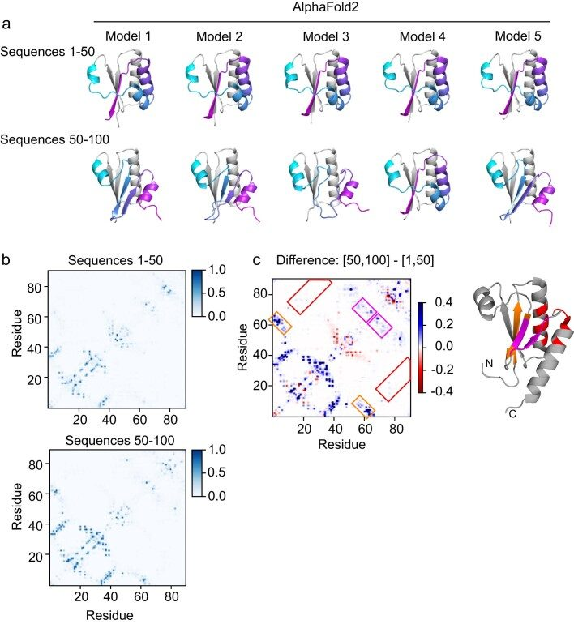
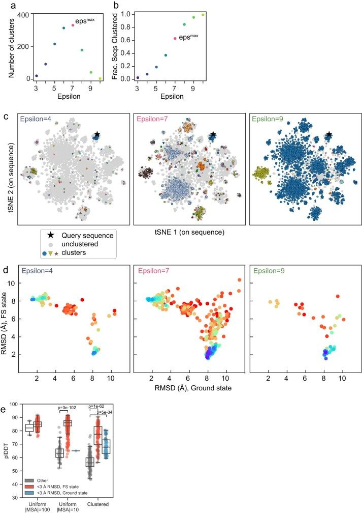
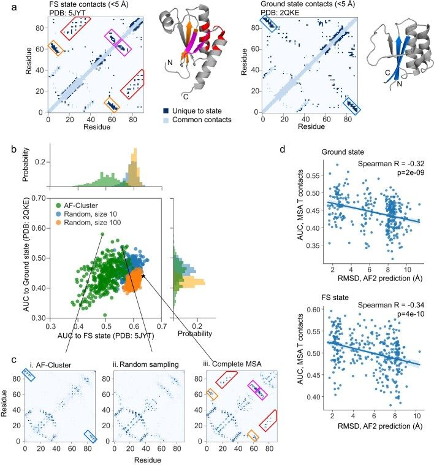
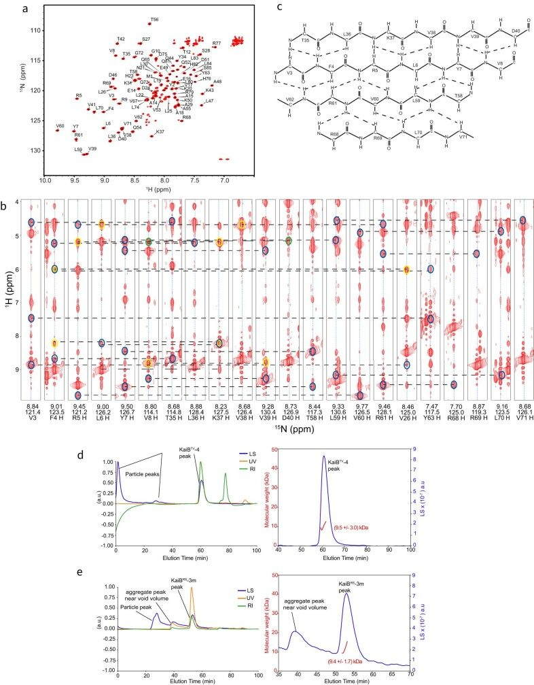
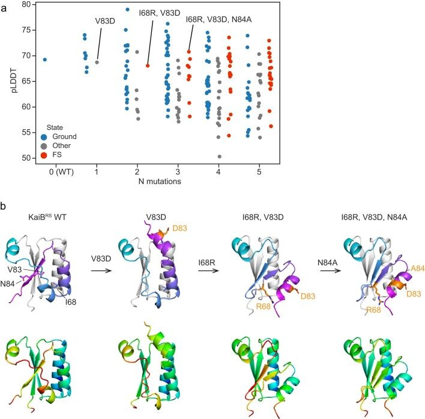
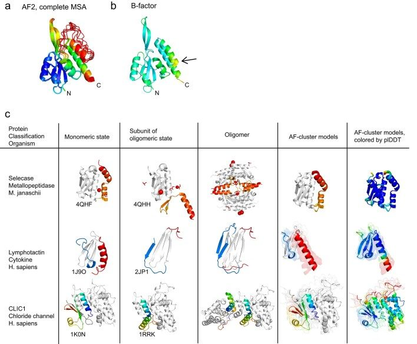
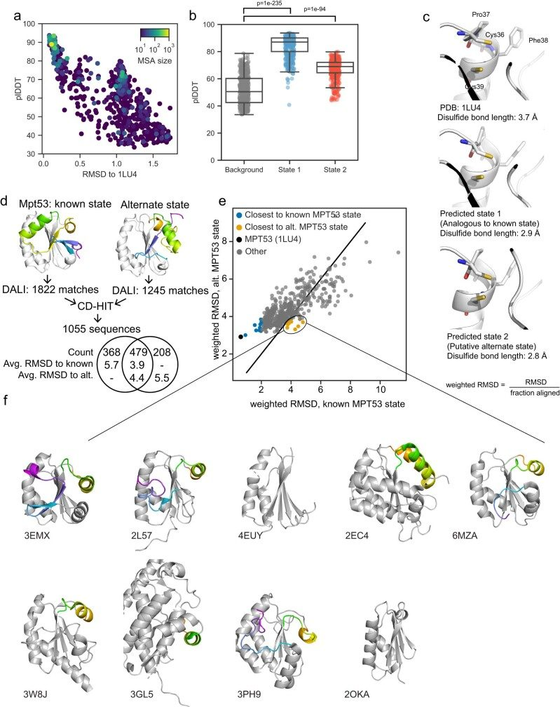
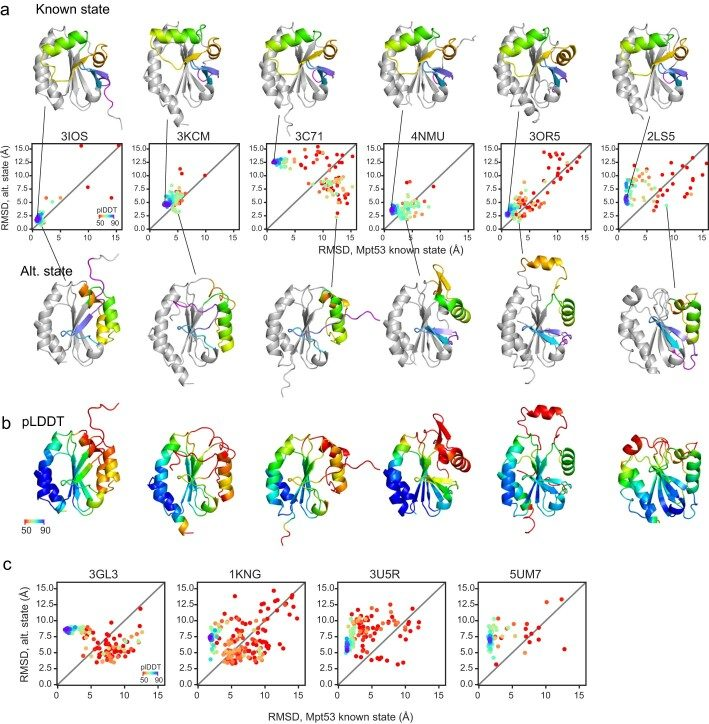
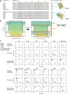
References
- Highly accurate protein structure prediction with AlphaFold Nature 2021 doi
- Dynamic personalities of proteins Nature 2007 doi
- SNPs, protein structure, and disease Hum. Mutat. 2001 doi
- Biophysical and mechanistic models for disease-causing protein variants Trends Biochem. Sci. 2019 doi
- Circadian rhythms. A protein fold switch joins the circadian oscillator to clock output in cyanobacteria Science 2015 doi
- High-accuracy protein structure prediction in CASP14 Proteins 2021 doi
- Correlation of co-ordinated amino acid substitutions with function in viruses related to tobacco mosaic virus J. Mol. Biol. 1987 doi
- Evolutionarily conserved pathways of energetic connectivity in protein families Science 1999 doi
- Protein 3D structure computed from evolutionary sequence variation PLoS ONE 2011 doi
- Direct-coupling analysis of residue coevolution captures native contacts across many protein families Proc. Natl Acad. Sci. USA 2011 doi
- AlphaFold2 fails to predict protein fold switching Protein Sci. 2022 doi
- Impact of protein conformational diversity on AlphaFold predictions Bioinformatics 2022 doi
- Assessment of prediction methods for protein structures determined by NMR in CASP14: impact of AlphaFold2 Proteins 2021 doi
- Sampling alternative conformational states of transporters and receptors with AlphaFold2 eLife 2022 doi
- Three-dimensional structures of membrane proteins from genomic sequencing Cell 2012 doi
- Coevolutionary signals across protein lineages help capture multiple protein conformations Proc. Natl Acad. Sci. USA 2013 doi
- Large-scale identification of coevolution signals across homo-oligomeric protein interfaces by direct coupling analysis Proc. Natl Acad. Sci. USA 2017 doi
- Stein, R. A. & Mchaourab, H. S. Modeling alternate conformations with Alphafold2 via modification of the multiple sequence alignment. Preprint at bioRxiv10.1101/2021.11.29.470469 (2021).
- Coevolution-derived native and non-native contacts determine the emergence of a novel fold in a universally conserved family of transcription factors Protein Sci. 2022 doi
- Coevolutionary analysis of protein subfamilies by sequence reweighting Entropy 2020 doi
- Design and discovery of metamorphic proteins Curr. Opin. Struct. Biol. 2022 doi
- An α helix to β barrel domain switch transforms the transcription factor RfaH into a translation factor Cell 2012 doi
- Reversible fold-switching controls the functional cycle of the antitermination factor RfaH Nat. Commun. 2019 doi
- Multiple stable conformations account for reversible concentration-dependent oligomerization and autoinhibition of a metamorphic metallopeptidase Angew. Chem. Int. Ed. 2014 doi
- Interconversion between two unrelated protein folds in the lymphotactin native state Proc. Natl Acad. Sci. USA 2008 doi
- The Mad1/Mad2 complex as a template for Mad2 activation in the spindle assembly checkpoint Curr. Biol. 2005 doi
- The Mad2 spindle checkpoint protein has two distinct natively folded states Nat. Struct. Mol. Biol. 2004 doi
- Protein metamorphosis: the two-state behavior of Mad2 Structure 2008 doi
- Extant fold-switching proteins are widespread Proc. Natl Acad. Sci. USA 2018 doi
- Origins of coevolution between residues distant in protein 3D structures Proc. Natl Acad. Sci. USA 2017 doi
- Expression of a gene cluster kaiABC as a circadian feedback process in cyanobacteria Science 1998 doi
- Pitsawong, W. et al. From primordial clocks to circadian oscillators. Nature616, 183–189 (2023).10.1038/s41586-023-05836-9PMC1007622236949197 doi
- Structural basis of the day-night transition in a bacterial circadian clock Science 2017 doi
- ColabFold: making protein folding accessible to all Nat. Methods 2022 doi
- Ester, M., Kriegel, H.-P., Sander, J. & Xu, X. A density-based algorithm for discovering clusters in large spatial databases with noise. In Proc. 2nd International Conference on Knowledge Discovery and Data Mining (KDD-96) 226–231 (ACM, 1996).
- Rao, R. M. et al. MSA Transformer. In Proc. International Conference on Machine Learning 8844–8856 (PMLR, 2021).
- The Legionella pneumophila kai operon is implicated in stress response and confers fitness in competitive environments Environ. Microbiol. 2014 doi
- Minimal tool set for a prokaryotic circadian clock BMC Evol. Biol. 2017 doi
- Consistent blind protein structure generation from NMR chemical shift data Proc. Natl Acad. Sci. USA 2008 doi
- Using AlphaFold to predict the impact of single mutations on protein stability and function PLoS ONE 2023 doi
- The intracellular chloride ion channel protein CLIC1 undergoes a redox-controlled structural transition J. Biol. Chem. 2004 doi
- Gram-positive DsbE proteins function differently from Gram-negative DsbE homologs. A structure to function analysis of DsbE from Mycobacterium tuberculosis J. Biol. Chem. 2004 doi
- Dali server update Nucleic Acids Res. 2016 doi
- The prospects and opportunities of protein structure prediction with AI Nat. Rev. Mol. Cell Biol. 2022 doi
- Many dissimilar NusG protein domains switch between α-helix and β-sheet folds Nat. Commun. 2022 doi
- Evolution of fold switching in a metamorphic protein Science 2021 doi
- Secondary structure switching in Cro protein evolution Structure 2004 doi
- Predicting protein flexibility with AlphaFold Proteins 2023 doi
- A minimal sequence code for switching protein structure and function Proc. Natl Acad. Sci. USA 2009 doi
- The design and characterization of two proteins with 88% sequence identity but different structure and function Proc. Natl Acad. Sci. USA 2007 doi
- Mutational tipping points for switching protein folds and functions Structure 2012 doi
- Oxidization of TGFbeta-activated kinase by MPT53 is required for immunity to Mycobacterium tuberculosis Nat. Microbiol. 2019 doi
- Multiple catalytically active thioredoxin folds: a winning strategy for many functions Cell. Mol. Life Sci. 2010 doi
- Probing the mutational interplay between primary and promiscuous protein functions: a computational-experimental approach PLoS Comput. Biol. 2012 doi
- AlphaFold Protein Structure Database: massively expanding the structural coverage of protein-sequence space with high-accuracy models Nucleic Acids Res. 2021 doi
- Van der Maaten, L. & Hinton, G. Visualizing data using t-SNE. J. Mach. Learn. Res.9, 2579–2605 (2008).
- Protein structural information derived from NMR chemical shift with the neural network program TALOS-N Methods Mol. Biol. 2015 doi
- The universally-conserved transcription factor RfaH is recruited to a hairpin structure of the non-template DNA strand eLife 2018 doi
- Structure of the Mad2 spindle assembly checkpoint protein and its interaction with Cdc20 Nat. Struct. Biol. 2000 doi
- MMseqs2 enables sensitive protein sequence searching for the analysis of massive data sets Nat. Biotechnol. 2017 doi
- UniRef clusters: a comprehensive and scalable alternative for improving sequence similarity searches Bioinformatics 2015 doi
- Gapped BLAST and PSI-BLAST: a new generation of protein database search programs Nucleic Acids Res. 1997 doi
- MAFFT multiple sequence alignment software version 7: improvements in performance and usability Mol. Biol. Evol. 2013 doi
- RAxML version 8: a tool for phylogenetic analysis and post-analysis of large phylogenies Bioinformatics 2014 doi
- CD-HIT: accelerated for clustering the next-generation sequencing data Bioinformatics 2012 doi
- New algorithms and methods to estimate maximum-likelihood phylogenies: assessing the performance of PhyML 3.0 Syst. Biol. 2010 doi
- The influence of rate heterogeneity among sites on the time dependence of molecular rates Mol. Biol. Evol. 2012 doi
- A space-time process model for the evolution of DNA sequences Genetics 1995 doi
- NMRPipe: a multidimensional spectral processing system based on UNIX pipes J. Biomol. NMR 1995 doi
- Sparse multidimensional iterative lineshape-enhanced (SMILE) reconstruction of both non-uniformly sampled and conventional NMR data J. Biomol. NMR 2017 doi
- POKY software tools encapsulating assignment strategies for solution and solid-state protein NMR data J. Struct. Biol. X 2022 doi
- I-PINE web server: an integrative probabilistic NMR assignment system for proteins J. Biomol. NMR 2019 doi
- PINE-SPARKY.2 for automated NMR-based protein structure research Bioinformatics 2018 doi
- Integrative NMR for biomolecular research J. Biomol. NMR 2016 doi
- The Xplor-NIH NMR molecular structure determination package J. Magn. Reson. 2003 doi
- PONDEROSA-C/S: client-server based software package for automated protein 3D structure determination J. Biomol. NMR 2014 doi
- The AUDANA algorithm for automated protein 3D structure determination from NMR NOE data J. Biomol. NMR 2016 doi
- Pymol: an open-source molecular graphics tool CCP4 Newsl. Protein Crystallogr. 2002
- Announcing the launch of Protein Data Bank China as an associate member of the Worldwide Protein Data Bank Partnership Acta Crystallogr. D 2023 doi
- Protein Data Bank: the single global archive for 3D macromolecular structure data Nucleic Acids Res. 2019 doi
- Evaluating protein structures determined by structural genomics consortia Proteins 2007 doi
- AQUA and PROCHECK-NMR: programs for checking the quality of protein structures solved by NMR J. Biomol. NMR 1996 doi
- NMRbox: a resource for biomolecular NMR computation Biophys. J. 2017 doi
- HHblits: lightning-fast iterative protein sequence searching by HMM-HMM alignment Nat. Methods 2011 doi
- MAFFT online service: multiple sequence alignment, interactive sequence choice and visualization Brief. Bioinform. 2019 doi
- IQ-TREE 2: new models and efficient methods for phylogenetic inference in the genomic era Mol. Biol. Evol. 2020 doi
- Gene for an immunoglobulin-binding protein from a group G streptococcus J. Bacteriol. 1986 doi
- MDTraj: a modern open library for the analysis of molecular dynamics trajectories Biophys. J. 2015 doi
- Scikit-learn: machine learning in Python J. Mach. Learn. Res. 2011
- SciPy 1.0: fundamental algorithms for scientific computing in Python Nat. Methods 2020 doi
- Dali server: structural unification of protein families Nucleic Acids Res. 2022 doi